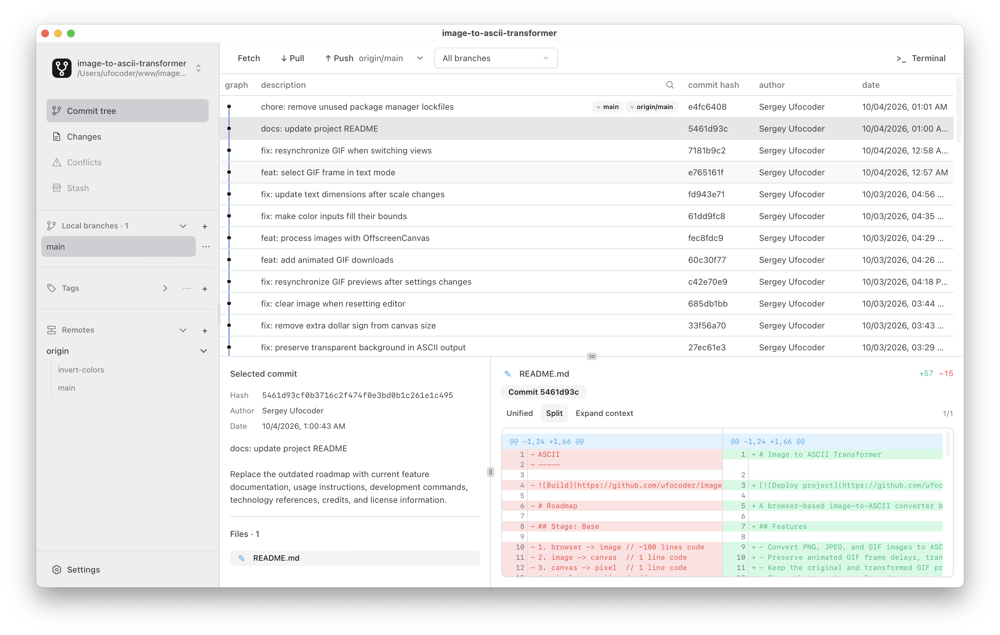

A little less terminal, a lot more clarity
A Git client for macOS. Explore your branches, review changes, and make your next commit with a clear view of the details

One window. The whole picture · Screenshot of the GIT UI app
Features
Commit history
Browse the commit graph across local and remote branches. Search by message, author, SHA, or file path
Review and commit
Inspect unified or side-by-side diffs, stage files or folders, and create, amend, or sign commits
Branches and tags
Create, rename, and delete branches and tags. Rebase onto another branch and push tags to a remote
Resolve conflicts
Compare both sides with the common base, jump between changed blocks, and edit and stage the result
Stash changes
Set aside unfinished work, inspect saved changes, and apply a stash when you are ready
Remote sync
Fetch updates, pull changes, and push commits. Review Git output in the Terminal panel
Get started with GIT UI
Choose the installer for your Mac, then open a local repository. Git must be installed first
It will always be free and open source
Download GIT UI
Desktop appChecking available downloads…
Installers are hosted on GitHub Releases
All releases